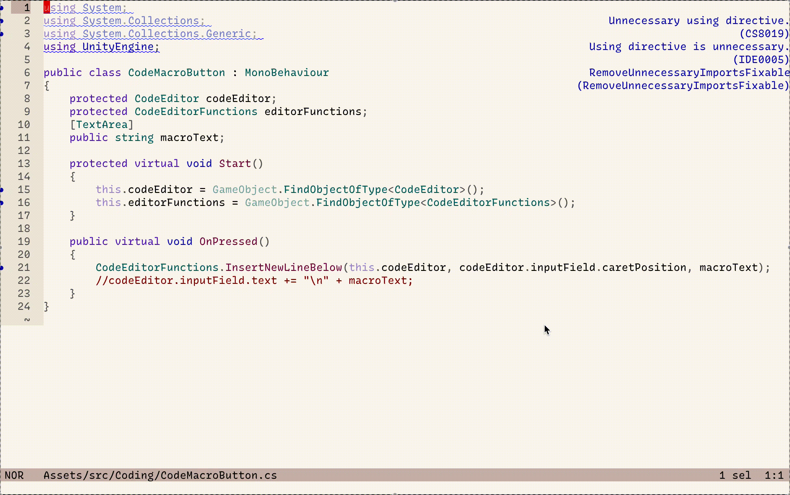
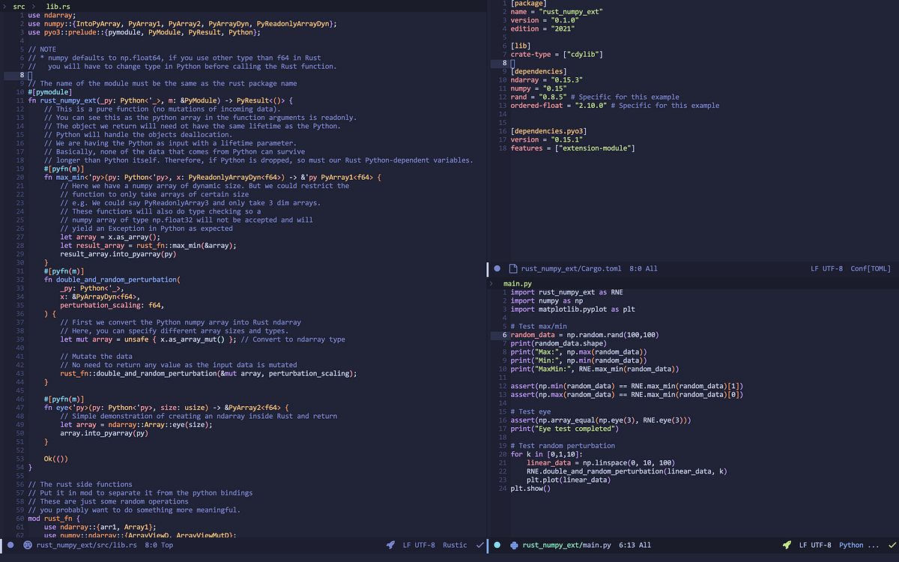
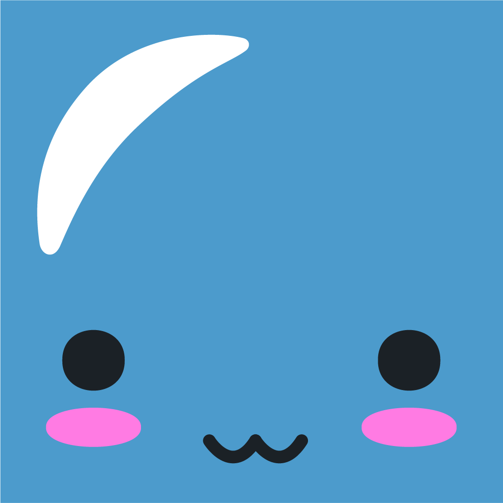
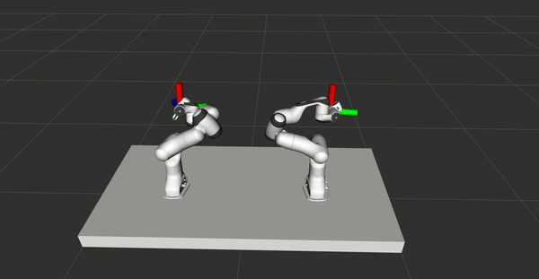
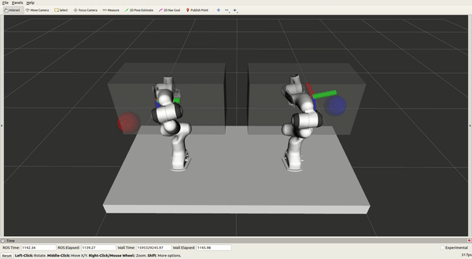
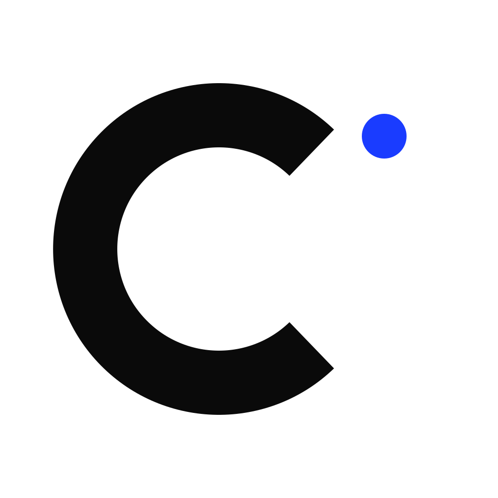

Bot Beats
Educational programming & robotics game
Educational programming & robotics game

Technical Writing (Medium)

Technical Writing (Medium)

Technical Writing (Medium)

Play Store and AppStore

VR control for bimanual robots

Experimenting on moveit_vive

Custom built robotics arm using 3D printing, Raspberry Pi, Arduino and ROS
I'm currently leading the development of Hefring Marine's project selected for the NATO DIANA 2026 programme — one of only 15 companies chosen in the maritime domain from over 3,600 applicants worldwide. DIANA (Defence Innovation Accelerator for the North Atlantic) supports cutting-edge dual-use technology development across the Alliance.
My work spans two areas: building machine learning pipelines for radar-based object detection and classification, and integrating radar hardware into Hefring's embedded software stack. The goal is to equip maritime vessels with real-time situational awareness for defence, search and rescue, and civil security operations.
Leading development of Hefring's NATO DIANA 2026 project, selected from over 3,600 applicants in the maritime domain. Building ML pipelines for radar-based object detection and classification, and integrating radar hardware into the embedded software stack.
Developed and optimised embedded software for Hefring's Intelligent Marine Assistance System (IMAS), enabling reliable real-time processing on edge computers aboard marine vessels. Integrated sensors, navigation equipment, and other onboard hardware into the software stack, and travelled internationally to install systems on customer vessels.
Travelshift powers travel booking platforms across Europe, including Guide to Iceland and Guide to Europe. Worked on the AI team's automatic trip generation algorithm, building systems that compose personalised multi-day itineraries across European destinations at scale.
ATTA Technologies is a motion-capture platform that translates human body movement into actionable data for sports analytics and interactive applications. Developed the skeleton pose estimation and body movement detection models powering gesture-based gameplay, similar in concept to Kinect. Also wrote low-level hardware drivers for peripheral components interfacing with the platform.
RaSpect uses AI-powered computer vision to automate safety inspections of buildings and built infrastructure. Built the core detection engine, an ensemble of multiple vision models working together, along with an image and video stitching pipeline for long continuous recordings of building facades, including challenging cases involving reflective surfaces and visually repetitive materials.

One of ten teams selected from a record number of applicants for the six-week accelerator run by KLAK – Icelandic Startups, Nova and Huawei. Cirtuic is the open, AI-native PCB design platform.
Abstract
With computers being used for more applications where commands can be spoken it is
useful to find algorithms which can separate voices from each other so that software
can turn spoken words into commands. In this paper our goal is to describe how
Independent Component Analysis (ICA) can be used for separation of voices in cases
where we have at least the same number of microphones, at different distances from
the speakers, as speakers whose voices we wish to separate, the so called "cocktail
party problem". This is done by implementing an ICA algorithm on voice recordings
containing multiple persons and examining the results. The use of both ICA
algorithms result in a clear separation of voices, the advantage of fastICA is that
the computations take a fraction of the time needed for the ML-ICA. Both algorithms
can also successfully separate voices when recordingsare made by more microphones
than speakers. The algorithms were also able to separate some of the voices when
there were fewer microphones than speakers which was surprising as the algorithms
have no theoretical guarantee for this.
Abstract
A control system used to control two Panda Franka Emika robots online and
simultaneously with two HTC Vive controllers is presented, with the primary purpose
of demonstrating tasks for robots. The system is validated by learning from
demonstration/imitation learning task via Principle Component Analysis (PCA). The
task consists of learning different bimanual movement patterns e.g. for drawing
sketches, with latent variables that then can be manipulated by the user to generate
new shapes of similar structure. Tasks of various correlations between the arms are
tested and compared. The system uses components and adaptations e.g. preexisting
modules for sensing, communication, motion planning, etc. to realize the goal of
modularity and support for other robots than the one used in this thesis. The most
prominent systems used are the Robot Operating System (ROS) for the base framework
for handling packages and sending information between different parts of the system,
and MoveIt’s planning library (running on ROS) for managing kinematics and
collision.